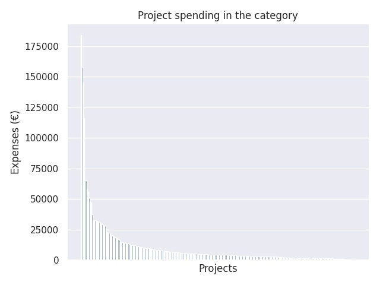

Kärkihanke 1 - hakuryhmä 1: Tutoropettajien koulutus ja osaamisen kehittäminen
Category summary
10.4K spent on average
184K highest spending

Reports in the category
Helsingin kaupungin opetusvirasto
Project name: Helsingin tutoropettajien koulutus ja osaamisen kehittäminen
184K spent
Tampereen kaupunki, Vapeha,
Project name: Pirkanmaan tutoropettajien koulutusohjelma
158K spent
Espoon kaupunki
Project name: Uuden espoolaisen peruskoulun mahdollistajat
146K spent
Vantaan kaupunki
Project name: Tutoropettajien koulutus ja osaamisen kehittäminen
116K spent
Hyvinkään kaupunki
Project name: Pedagogiset kouluttajat opettajan työn tukena
65.5K spent
Jyväskylän kaupunki
Project name: Jyväskylän tutoropettajien osaamisen kehittäminen
65.2K spent
Mäntsälän kunta
Project name: Tutoropettajien koulutus ja osaamisen kehittäminen
58.3K spent
Joensuun kaupunki
Project name: Tutoropettajien koulutus ja osaamisen kehittäminen / Joensuun kaupunki
55.9K spent
Kuopion kaupunki
Project name: Mentoroinnilla menestykseen
51K spent
Lahden kaupunki, Sivistystoimiala, Lasten-ja nuorten vastuualue, perusopetuspal.
Project name: UPO - Lahti 1.
48.1K spent
Turun kaupunki, sivistystoimiala
Project name: Schola Tutor Aboensis
47.5K spent
Kouvolan kaupunki
Project name: #tutorkouvola1
37.6K spent
Oulun kaupunki sivistys- ja kulttuuripalvelut
Project name: Ookko nää opettajatutori?
33.1K spent
Porin kaupunki, sivistyskeskus
Project name: Tutoropettajien osaamisen kehittäminen
32.9K spent
Seinäjoen kaupunki
Project name: Tutorkoulutusta osaamisen vahvistamiseen
32.7K spent
Lappeenrannan kaupunki
Project name: Innostuva, uudistuva Lappeenranta
32.7K spent
Lohjan kaupunki / sivistystoimi
Project name: Lohjan digitutorien koulutus ja osaamisen lisääminen
32.4K spent
Rovaniemen kaupunki
Project name: ArticTutors
31.7K spent
Laukaan kunta
Project name: Laukaan tutoropettajien osaamisen kehittäminen
31.2K spent
Nurmijärven kunta
Project name: Pedagogiset tiimit koulua kehittämässä
31.1K spent
Kokkolan kaupunki
Project name: Kokkolan tutorkoulutus
30.5K spent
Kirkkonummen kunta
Project name: Opetuksen ja oppimisen tutorointi - Polku TVT asiantuntijuuteen Kirkkonummella
29.1K spent
Salon kaupunki
Project name: Tutoropettaja pedagogisena asiantuntijana
28.6K spent
Tuusulan kunta
Project name: Tutoropettaja uuden opetussuunnitelman tukena
28.3K spent
Porvoon kaupunki
Project name: Tutoropettajien koulutus ja osaamisen kehittäminen
28.2K spent
Mikkelin kaupunki / opetustoimi
Project name: Mikkelin tutorit
26.2K spent
Vaasan kaupungin sivistystoimi
Project name: Vaasan kehittäjätehdas
23K spent
Kotkan kaupunki
Project name: Kotkan perusopetuksen tutoropettajien koulutus
22.8K spent
Keravan kasvatus- ja opetustoimi
Project name: Keravan tutorkoulutus (TUKO)
22.4K spent
Tornion kaupunki
Project name: Tornion kaupungin peruskoulujen tutoropettajien koulutus ja osaamisen kehittämishanke.
22K spent
Lempäälän kunta
Project name: Pirkanmaan tutoropettajien koulutusohjelma
20.3K spent
Järvenpään kaupunki / Lasten ja nuorten palvelualue
Project name: Me opimme!
20.3K spent
Borgå stad
Project name: Tutorlärarnas utbildning och kompetensutveckling
20.3K spent
Ylöjärven kaupunki
Project name: Pirkanmaan tutoropettajien koulutusohjelma
19.8K spent
Petäjäveden kunta
Project name: Petäjäveden tutoropettajien koulutus ja osaamisen kehittäminen
18.6K spent
Rauman kaupunki
Project name: Tutoropettajien koulutus ja osaamisen kehittäminen Raumalla
18.5K spent
Kangasalan kunta
Project name: Pirkanmaan tutoropettajien koulutusohjelma
18.1K spent
Pirkkalan kunta
Project name: Pirkanmaan tutoropettajien koulutusohjelma - Pirkkala
17K spent
Savonlinnan kaupunki
Project name: Peruskoulun Tutorit opissa, Savonlinna 2017-2018
16.9K spent
Raahen kaupunki, opetustoimi
Project name: Tutor tueksi tunnille I - hanke
15.4K spent
Raaseporin kaupunki
Project name: Raaseporin Into
15.1K spent
Kemin kaupunki
Project name: Kemin tutoropettajien koulutus ja osaamisen lisääminen
15K spent
Liperin kunta
Project name: Tutoropettajin koulutus
14.6K spent
Imatran kaupunki
Project name: Keskus, Kehityksen Kehto
14.5K spent
Hämeenlinnan kaupunki
Project name: Hämeenlinnan tutoropettajien koulutus ja osaamisen kehittäminen
14.3K spent
Siilinjärven kunta
Project name: Siilinjärven peruskoulujen tutoropettajien koulutus ja osaamisen kehittäminen
14.2K spent
Nokian kaupunki
Project name: Pirkanmaan tutoropettajien koulutusohjelma
13.7K spent
Esbo stad, Svenska bildningstjänster
Project name: Lära tillsammans
13.6K spent
Malax kommun
Project name: Lokal och regional modell för tutorlärarnas utbildning
13.3K spent
Äänekosken kaupunki
Project name: Äänekosken opetuspalveluiden tutoropettajien vertaiskoulutus-hanke
13.1K spent
Sastamalan kaupunki
Project name: Pirkanmaan tutoropettajien koulutusohjelma
13K spent
Loimaan kaupunki
Project name: Tutoropettajien koulutus-pedagogista osaamista ja vertaiskoulutustaitoja tutoropettajille
12.6K spent
Sipoon kunta/Koulutuspalvelut
Project name: Vertaistuella visionääriksi - Tutoropettajien koulutus Sipoossa
12.5K spent
Liedon kunta
Project name: Stuudor-hanke
12.3K spent
Heinolan kaupunki
Project name: Tutoropettajien koulutus / Heinola
12.1K spent
Varkauden kaupunki sivistyspalvelut
Project name: Tutor-opettajat
11.6K spent
Hollolan kunta
Project name: Uusi perusopetus ohjelma Hollolassa (hakuryhmä 1)
11.3K spent
Vihdin kunta
Project name: Tutorit ketteriksi opsin jalkauttamiseen Vihdissä
11.2K spent
Raision kaupunki
Project name: Taitavat digitutorit
11.1K spent
Uudenkaupungin kaupunki / Sivistyspalvelukeskus
Project name: Vakka-Suomen tutoropettajien koulutus ja osaamisen kehittäminen / Uusikaupunki
11K spent
Limingan kunta
Project name: Tutoreiden digispurtti
10.7K spent
Kurikan kaupunki
Project name: Kurikan tutoropettajien koulutus
10.4K spent
Orimattilan kaupunki
Project name: Tutoropettajien koulutus
10.3K spent
Valkeakosken kaupunki
Project name: Pirkanmaan tutoropettajien koulutusohjelma/ Valkeakoski
10.2K spent
Iisalmen kaupunki
Project name: Tutoropettajien koulutus - TOP
10.1K spent
Ylivieskan kaupunki
Project name: Ylivieskan digitutorit – Osaaminen haltuun
9.9K spent
Kauhajoen kaupunki
Project name: Pedagogisten tutoropettajien koulutus
9.87K spent
Ilmajoen kunta
Project name: Digitutoreille oppia Ilmajoella
9.78K spent
Kontiolahden kunta
Project name: Kontiolahden kunnan tutor-opettajien koulutus ja osaamisen kehittäminen
9.75K spent
Kempeleen kunta
Project name: Tutoropettajien koulutus ja osaamisen kehittäminen
9.6K spent
HAMINAN KAUPUNKI, Lasten ja nuorten koulutuspalvelut
Project name: Tutoropettajien koulutus ja osaamisen kehittäminen
9.26K spent
Kuusamon kaupunki
Project name: Digitutorointitaidot haltuun
9.18K spent
Pedersöre kommun
Project name: TUTORCOMP Pedersöre
9.13K spent
Alavuden kaupunki
Project name: Tutoropettajien koulutus ja osaamisen kehittäminen
8.96K spent
Paimion kaupunki
Project name: Tutoropettajien koulutus ja osaamisen kehittäminen
8.71K spent
Korsholms kommun
Project name: DiGikompetens
8.68K spent
Pieksämäen kaupunki
Project name: Tutoropettajien koulutus ja osaamisen kehittäminen
8.58K spent
Tyrnävän kunta
Project name: Tukea tutorista-virtaa verkostosta Tyrnävällä
8.54K spent
Haapajärven kaupunki
Project name: Tukea tutorista - virtaa verkosta
8.45K spent
Lapuan kaupunki
Project name: Kollegakin osaa
8.32K spent
Nivalan kaupunki
Project name: Tutorkoulutus Nivala
8.3K spent
Kauniaisten sivistystoimi
Project name: Grani Future Tutors
7.78K spent
Muhoksen kunta
Project name: Kärkihanke 1 - hakuryhmä 1: Tutoropettajien koulutus ja osaamisen kehittäminen
7.76K spent
Jokioisten kunta
Project name: Jokioisten kunta; Tutoropettajien koulutus ja osaamisen kehittäminen
7.64K spent
Mänttä-Vilppulan sivistystoimi
Project name: Tutoropettajien koulutus ja osaamisen kehittäminen - Taidekaupungin digiloikka
7.38K spent
Porvoon steinerkoulun kannatusyhdistys ry
Project name: tvt-taidot haltuun opettajille vuoteen 2018 mennessä
7.36K spent
Iin kunta
Project name: Iin kunnan tutoropettajien koulutus ja osaamisen kehittäminen
7.31K spent
Maskun kunta
Project name: OSAAMO (OpetusSuunnitelmaan Arki Apua Maskun Opettajille)
7.2K spent
Muuramen kunta
Project name: Muuramen tutoropettajien osaamisen kehittäminen
7.16K spent
Naantalin kaupunki
Project name: Tutoropettajien koulutus
7.03K spent
Nakkilan kunta
Project name: Nakkilan katse kohti digikoulua
6.94K spent
Skolgarantiföreningen r.f.
Project name: Tutorlärarutbildning
6.71K spent
Harjavallan kaupunki
Project name: Kärkihanke 1: Uusi peruskoulu -ohjelma
6.65K spent
Kittilän kunta
Project name: Kittilä digiloikalla tiedon valtatielle
6.65K spent
Oy Helsingin yhteiskoulu ja reaalilukio
Project name: Tutor-opettajan koulutus ja osaamisen kehittäminen
6.62K spent
Helsingin yliopiston Viikin normaalikoulu
Project name: Digitutorkoulutus - Hgin yliopiston harjoittelukoulut
6.59K spent
Kalajoen kaupunki
Project name: Tukea tutorista - virtaa verkostosta
6.41K spent
Suomussalmen kunta
Project name: TUTKO - hanke tutoropettajien koulutus ja osaamisen kehittäminen
6.39K spent
Leppävirran kunta
Project name: Hanke 1 Tutor-opettajien koulutus
6.31K spent
Lieksan kaupunki
Project name: Tutoropettajien koulutus ja osaamisen kehittäminen
6.26K spent
Sotkamon kunta
Project name: DIGATA Sotkamo- Digiaikaan tutoreiden avulla
6.17K spent
Svenskspråkig grundläggande utbildning
Project name: Tutorlärarnas utbildning och kompetensutveckling
6.16K spent
Jämsän kaupunki
Project name: Jämsän DigiOpet 1.0 -kouluttautuminen
6.13K spent
Pielaveden kunta
Project name: Tulevaisuuden tutoropetuksen kehittäminen
6.06K spent
Loviisan kaupunki
Project name: Tutorit apuun - kahdella kielellä
6.05K spent
Euran kunta
Project name: Tutoropettajien koulutus ja osaamisen kehittäminen
5.75K spent
Forssan kaupunki, Sivistys- ja tulevaisuustoimiala
Project name: Tutorit Työn Tueksi
5.74K spent
Ruokolahden kunta
Project name: Kohti uutta koulua - Tutoropettajien koulutus
5.65K spent
Siuntion kunta
Project name: Monipuolista tutorointia - opettaja tulevaisuuden taitojen edistäjä
5.56K spent
Mynämäen kunta
Project name: Mynämäen tuturopettejien koulutus
5.54K spent
Ruskon kunta
Project name: Erkolla tutoriksi
5.5K spent
Akaan kaupunki
Project name: Pirkanmaan tutoropettajien koulutusohjelma / Akaa
5.47K spent
Kristinestad
Project name: Kompetensutvecklande tutorer
5.4K spent
Oulaisten kaupunki
Project name: Oulaisten digitutorkoulutus 2017
5.36K spent
Lapinlahden kunta
Project name: Tutoropettajien koulutus
5.34K spent
Ähtärin kaupunki
Project name: Valmiuksia digiloikkaan ilmiöpohjaisessa opetuksessa
5.25K spent
Eurajoen kunta
Project name: Eurajoen Tutoropettajien TVT - koulutushanke
5.22K spent
Kiteen kaupunki
Project name: Kiteen tutoropettajien koulutus
5.17K spent
Sievin kunta
Project name: Tutorit vertaiskouluttajina
5.11K spent
Utajärven kunta
Project name: Tukea tutorista - virtaa verkosta!
5.09K spent
Urjalan kunta
Project name: Pirkanmaan tutoropettajien koulutusohjelma
5K spent
Inarin kunta
Project name: Arktista osaamista - Inarin tutoropettajakoulutus
4.98K spent
Laihian kunta
Project name: Nuukailematta paras
4.93K spent
Kankaanpään kaupunki
Project name: Kankaanpään perusopetuksen OPS-tutorit
4.92K spent
Sodankylän kunta
Project name: Tutor-opettajien koulutus ja osaamisen kehittäminen - Arktista osaamista
4.87K spent
Asikkalan kunta
Project name: Tutoropettajien koulutus ja osaamisen kehittäminen
4.84K spent
Siikajoen kunta
Project name: Tutoropettajien koulutus ja osaamisen kehittäminen
4.82K spent
Keminmaan kunta / sivistyspalvelut
Project name: Tutorille taitoa
4.82K spent
Ikaalisten kaupunki
Project name: Tutoropettajien koulutus
4.8K spent
Lopen kunta, kasavatus- ja koulutustoimi
Project name: Tutoropettajien koulutus ja osaamisen kehittäminen
4.76K spent
Nurmeksen kaupunki
Project name: Kärkihanke 1 - hakuryhmä 1: Tutoropettajien koulutus ja osaamisen kehittäminen
4.76K spent
Kuhmon kaupunki
Project name: Kuhmon digitutorkoulutus
4.72K spent
Larsmo kommun
Project name: Framtidens tutorlärare
4.65K spent
Hausjärven kunta
Project name: Hausjärven tutor-opettajien koulutus ja osaamisen kehittämishanke
4.63K spent
Kuhmoisten kunta
Project name: Tutoropen osaaminen Kuhmoisissa
4.57K spent
Kannuksen kaupunki
Project name: Tutoropettajakoulutus / Kannus
4.56K spent
Vörå kommun
Project name: Tutorlärarnas utbildning och kompetensutveckling
4.56K spent
Närpes stad
Project name: Tutorlärarnas utbildning och kompetensutveckling
4.55K spent
Askolan kunta
Project name: Tuutorista tukea opettajalle, koulutus
4.54K spent
Outokummun kaupunki, Kummun koulu
Project name: Tutoreidemme seudullinen kouluttautuminen
4.51K spent
Vesilahden kunta
Project name: Pirkanmaan tutoropettajien koulutusohjelma
4.5K spent
Tammelan kunta, Sivistystoimi
Project name: Hakuryhmä 1: Tutoropettajien koulutus ja osaamisen kehittäminen
4.5K spent
Kemijärven kaupungin perusopetus
Project name: Tutoropettajien koulutus ja osaaminen Kemijärvellä
4.5K spent
Oriveden kaupunki
Project name: Oriveden ja Pirkanmaan tutoropettajien koulutus
4.48K spent
Laitilan kaupunki
Project name: Vakka-Suomen tutoropettajien koulutus ja osaamisen kehittäminen
4.4K spent
Vaalan kunta
Project name: Onnistumisen avaimet TVT-pedagogiikkaan
4.29K spent
Maanviljelyslyseon osakeyhtiö
Project name: Tutor-opettajan ja vertaiskouluttajan koulutus
4.28K spent
Kokemäen kaupunki
Project name: Tutoropettajien koulutus ja osaamisen kehittäminen
4.16K spent
Haapaveden kaupunki
Project name: Tutorkoulutus Haapavesi
4.1K spent
Taipalsaaren kunta
Project name: Taipalsaaren tutoropettajien koulutus
4.1K spent
Tampereen kristillinen koulu/Suomen Adventtikirkko
Project name: Suomen Adventtikirkon tutoropettajien koulutusohjelma
4.04K spent
Kuortaneen kunta
Project name: Osaamisen vahvistaminen Kuortaneen perusopetuksessa
4K spent
Oulunkylän yhteiskoulun kannatusyhdistys ry
Project name: Tutoropettajien koulutus ja osaamisen kehittäminen
3.96K spent
Pihtiputaan kunta
Project name: Tutoropettajat joka koululle
3.94K spent
Kaustisen kunta
Project name: Tutoropettajille koulutus Kaustiselle!
3.9K spent
Nousiaisten kunta
Project name: Nousiaisten tutoropettajien koulutus
3.81K spent
Pohjois-Haagan yhteiskoulu
Project name: Tutoropettajan koulutus ja osaamisen kehittäminen
3.76K spent
Joutsan kunta
Project name: Tutoropettajan koulutus ja osaamisen kehittäminen
3.74K spent
Pyhtään kunta
Project name: Tutoropettajat osaajiksi
3.74K spent
Simon kunta
Project name: Tutor-opettajienkouluttajakoulutus Meri-Lapin kuntien tutor-opettajavastaaville
3.7K spent
Itä-Suomen suomalais-venäläisen koulun säätiö
Project name: Tutoropettajat tukena tunneilla ja toiminnassa/koulutus
3.61K spent
Isonkyrön kunta
Project name: Tutoropettajien koulutus ja osaamisen kehitäminen
3.61K spent
Kronoby kommun
Project name: Tutorlärande i Kronoby kommun
3.6K spent
Karstulan kunta
Project name: Karstulan tutoropettajien koulutus
3.58K spent
Alavieskan kunta
Project name: Tukea tutorista-virtaa verkostosta
3.56K spent
Pälkäneen kunta
Project name: Pirkanmaan tutoropettajien koulutusohjelma
3.51K spent
Lauttasaaren yhteiskoulu
Project name: Lauttasaaren yhteiskoulun tutoropettajan koulutus
3.47K spent
Kulosaaren yhteiskoulun osakeyhtiö
Project name: Digital and pedagogical cooperation - everyone´s cup of tea
3.43K spent
Ylitornion kunta, sivistystoimi
Project name: Tutoropettajien koulutus ja osaamisen kehittäminen
3.36K spent
Kristiinankaupunki/Karijoki
Project name: Oppivat opettajat
3.29K spent
Juuan kunta
Project name: Tutoreita digitueksi
3.29K spent
Kouluyhdistys Pestalozzi Schulverein Skolföreningen ry
Project name: Tutoropettajien koulutus ja osaamisen kehittäminen
3.29K spent
Oulun steinerkoulun kannatusyhdistys ry
Project name: Digitutoropettaja-koulutus steinerkoulujen opettajille
3.25K spent
Siikalatvan kunta
Project name: Siikalatvan kehittyvät tutorit
3.23K spent
Mäntyharjun kunta
Project name: Tutorkoulutus tueksi
3.2K spent
Inkoon kunta
Project name: Tutoropettajien koulutus
3.18K spent
Itä-Suomen yliopisto, Joensuun normaalikoulu
Project name: Tutoropettajien koulutus ja osaamisen kehittäminen
3.14K spent
Vasa övningsskola
Project name: Utbildning och kompetensutveckling för tutorlärare
3.11K spent
Kärsämäen kunta
Project name: Tukea tutorista – virtaa verkostosta!
3.1K spent
Suomalaisen Yhteiskoulun Oy
Project name: Opettajasta tutoropettajaksi ja pedagogiseksi tueksi
3.08K spent
Lumijoen kunta
Project name: Tutoropettajien koulutus ja osaamisen kehittäminen
3.07K spent
Lemin kunta
Project name: Lemin tutoropettajien koulutus ja osaamisen kehittäminen
3.04K spent
Björneborgs svenska samskola
Project name: Tutorlärarutbildning
3.04K spent
Joroisten kunta
Project name: Buustia digitutoreille
3.03K spent
Helsingin Rudolf Steiner -koulun kannatusyhdistys ry
Project name: Digiloikan mahdollistaminen Helsingin Rudolf Steiner -koulussa
3.02K spent
Reisjärven kunta
Project name: Tutoropettajien koulutus ja osaamisen kehittäminen
3K spent
Maunulan yhteiskoulu
Project name: Tutoropettajien koulutus ja osaamisen kehittäminen
3K spent
Polvijärven kunta
Project name: Tutoropettajien koulutus ja osaamisen kehittäminen Polvijärvellä
3K spent
Sauvon kunta
Project name: Tutoropettajien koulutus ja osaamisen kehittäminen
3K spent
Hankasalmen kunta
Project name: TVt-tutoropettajien kouluttaminen Hankasalmella
3K spent
Vieremän kunta
Project name: DIGIKAMU
3K spent
Turun yliopiston kasvatustieteen tiedekunta, Turun normaalikoulu
Project name: Tutoropettajien koulutus ja osaamisen kehittäminen
3K spent
Kimitoöns kommun, bildningsavdelningen
Project name: Kimitoöns digitutorer - KidIT
2.95K spent
Riihimäen kaupunki
Project name: Tutoropettaja oppii
2.93K spent
Tervolan kunta
Project name: Tervolan kunnan tutoropettajien koulutushanke
2.92K spent
Suonenjoen kaupunki
Project name: Suonenjoen digitutorit
2.9K spent
Lahden Rudolf Steiner -koulun Kannatusyhdistys ry.
Project name: Tutoropettajien koulutus ja osaamisen kehittäminen
2.88K spent
Tampereen Steiner-kouluyhdistys ry
Project name: Tope-koulutus 2017-18
2.84K spent
Mustasaaren kunta
Project name: Tutoropettajien koulutus ja osaamisen kehittäminen
2.79K spent
Pornaisten kunta
Project name: Digiopettajasta tutoriksi
2.54K spent
Rautalammin kunta
Project name: Rautalammin kunnan opettajista digitutoreita
2.47K spent
Pyhäjärven kaupunki
Project name: Pyhäjärven perusopetuksen Tutor-koulutushanke
2.45K spent
Punkalaitumen kunta
Project name: Pirkanmaan tutoropettajien koulutusohjelma.
2.36K spent
Rääkkylän kunta
Project name: Tutorien koulutus ja osaamisen kehittäminen
2.29K spent
Merikarvian kunta
Project name: Tutoropettajien koulutus Merikarvialla
2.26K spent
Huittisten kaupunki
Project name: Digituutoreiden osaamispolku
2.25K spent
Understödsföreningen för Rudolf Steiner skolan i Helsingfors r.f.
Project name: Tutorlärarnas utbildning och kompetensutveckling
2.21K spent
Tuusniemen kunta
Project name: Tutoropettajien koulutus ja osaaminen
2.2K spent
Keski-Uudenmaan kristillisen koulun ja päiväkodin kannatusyhdistys ry
Project name: Kukon digiloikka 1.
2.18K spent
Vehmaan kunta, koulutoimi
Project name: Vakka-Suomen tutoropettajien koulutushanke
2.11K spent
Teuvan kunta/sivistystoimi
Project name: "Vertaansa vailla” - tutoropettajien alueellinen yhteistyö
2.1K spent
Juvan kunta /sivistystoimi/perusopetus
Project name: Tutoropettajien koulutus ja kehittäminen / Juva
2.06K spent
Joensuun steinerkoulun kannatusyhdistys ry.
Project name: Tutoropettajien koulutus ja osaamisen kehittäminen
1.98K spent
Posion kunta
Project name: Tutoriopettajien koulutushanke
1.92K spent
Kyyjärven kunta
Project name: Uusi peruskoulu; Kärkihanke 1 -hakuryhmä 1: Tutoropettajien koulutus ja osaamisen kehittäminen
1.86K spent
Helsingin juutalainen seurakunta
Project name: Kärkihanke 1: Uusi peruskoulu -ohjelma
1.84K spent
Kustavin kunta
Project name: Vakka-Suomen tutoropettajien koulutus ja osaamisen kehittäminen/Kustavi
1.82K spent
Humppilan kunta
Project name: Tutoropettajien koulutus ja osaamisen kehittäminen
1.8K spent
Pertunmaan kunta
Project name: Pertunmaan tutoropettajan kouluttaminen kunnan koulujen tarpeisiin
1.79K spent
Savitaipaleen kunta
Project name: Tutoropettajan koulutus ja osaamisen kehittäminen
1.79K spent
Espoon kristillisen koulun kannatusyhdistys ry
Project name: 1.Tutoropettajien koulutus ja osaamisen kehittäminen
1.78K spent
Ristijärven kunta
Project name: Tutoreille tueksi tietoa ja taitoa
1.77K spent
Pyhärannan kunta
Project name: Tutoropettajien koulutus ja osaamisen kehittäminen- Vakka-Suomen opstutorit/Pyhäranta
1.76K spent
Ruoveden kunta
Project name: Pirkanmaan tutoropettajien koulutusohjelma/Ruoveden kunta
1.75K spent
Rautjärven kunta
Project name: Tietotaitoa bitteihin
1.75K spent
Taivassalon kunta
Project name: Vakka-Suomen tutoropettajien koulutus ja osaamisen kehittäminen/Taivassalo
1.74K spent
Merijärven kunta
Project name: Tukea tutorista- virtaa verkosta!
1.71K spent
Etelä-Pohjanmaan Steinerkouluyhdistys ry
Project name: Digitutor-opettajan koulutus
1.71K spent
Elias-koulun kouluyhdistys ry.
Project name: Tutoropettajien koulutus ja osaamisen kehittäminen
1.71K spent
Helsingin Uusi yhteiskoulu Oy
Project name: Digitutor-vertaisverkosto
1.68K spent
Jyväskylän kristillisen koulun yhdistys ry
Project name: TVT1 - Tutorit Valmentautuvat Taitajiksi
1.67K spent
Pyhännän kunta
Project name: Tutortoimintaa Pyhännälle
1.65K spent
Hartolan kunta
Project name: Tutoropettajien koulutus ja osaamisen kehittäminen
1.64K spent
Ypäjän kunta
Project name: Tutor-opettajien koulutus
1.63K spent
Apollon Yhteiskoulun Kannatusyhdistys ry
Project name: Tutoropettajien koulutus
1.61K spent
Lappajärven kunta
Project name: Tutoropettajien koulutus ja osaamisen kehittäminen
1.61K spent
Porin Kristillisen koulun kannatusyhdistys ry
Project name: Digipedagogiksi oppimassa
1.58K spent
Lahden kristillisen koulun kannatusyhdistys ry
Project name: Tutorointia
1.58K spent
Konneveden kunta
Project name: Konneveden tutoropettajien osaamisen kehittäminen
1.57K spent
Kihniön kunta
Project name: Takametsien digiloikkareiden sparraaminen
1.56K spent
Kuopion kristillisen päiväkodin ja koulun kannatusyhdistys ry
Project name: Kukrin Tutoropettajakoulutushanke
1.54K spent
Oulun kristillinen kasvatus ry
Project name: Tutordigiloikka@Oukris
1.53K spent
Turun seudun steinerkouluyhdistys ry
Project name: Uusi peruskoulu- ohjelma
1.51K spent
Vantaan seudun steinerkoulun kouluyhdistys ry
Project name: Digitutoropettaja-koulutus Vantaan steinerkoulun opettajille
1.5K spent
Keiteleen kunta
Project name: Nilakan yhtenäiskoulun OPS ja DIGI-Tutor koulutus HR1
1.5K spent
Jyväskylän steinerkoulun kannatusyhdistys ry
Project name: Tutoropettajan koulutus ja osaamisen kehittäminen
1.5K spent
Kymenlaakson steinerkoulun kannatusyhdistys ry
Project name: Steinerpedagoginen Digitutor
1.5K spent
Heinäveden kunta
Project name: Tutoreita kouluttamassa
1.49K spent
Lappträsk kommun
Project name: Skolan är inte enbart en byggnad
1.44K spent
Ulvilan kaupunki
Project name: Tutoropettajan /koulujen digitutoreiden koulutushanke
1.44K spent
Oripään kunta
Project name: Oripään kunnan tutoropettajakoulutus
1.43K spent
Juupajoen kunta
Project name: Pirkanmaan tutoropettajien koulutusohjelma/Juupajoen kunta
1.39K spent
Myrskylän kunta
Project name: Tutoropettajien koulutus ja osaamisen kehittäminen
1.39K spent
Kannonkosken kunta
Project name: Kärkihanke 1 - hakuryhmä 1: Tutoropettajien koulutus ja osaamisen kehittäminen
1.33K spent
Lapinjärven kunta
Project name: Koulu ei ole rakennus
1.3K spent
Pellon kunta
Project name: Tutoropettajien koulutus ja osaamisen kehittäminen
1.23K spent
Föreningen för Svenska samskolans i Tammerfors upprätthållande r.f.
Project name: Tutorlärares utbildning och kompetensutveckling
1.21K spent
Kangasniemen kunta
Project name: Tutoropettajan Kangasniemen perusopetuksessa, tutoropettajien kouluttaminen
1.16K spent
Hyrynsalmen kunta
Project name: Hyrynsalmen tutoropettajien koulutus
1.14K spent
Sysmän kunta
Project name: Kärkihanke 1 - hakuryhmä 1:Tutoropettajien koulutus ja osaamisen kehittäminen
1.06K spent
Ranuan kunta
Project name: Tutoropettajien koulutus ja osaamisen kehittäminen
1.03K spent
Kolarin kunta
Project name: Kolarin digiloikka
970 spent
Toivakan kunta
Project name: Kärkihanke 1: Tutoropettajien koulutus ja osaamisen kehittäminen
926 spent
Uuraisten kunta
Project name: Uuraisten kunnan tutoropettajien koulutus ja osaamisen kehittäminen
911 spent
Auran kunta
Project name: Tutoropettajien koulutus
726 spent
Karvian kunta
Project name: Tutoropettajien koulutus
693 spent
Evijärven kunta
Project name: Digiloikan voimavarat -hanke, tutor apuna muutoksessa
432 spent
Puumalan kunta
Project name: Tutor-osaamista meillekin!
423 spent
Alajärven kaupunki, Sivistyslautakunta
Project name: Oppia ikä kaikki
420 spent
Vesannon yhtenäiskoulu
Project name: OPS2016 todeksi.
291 spent
Saarijärven kaupunki
Project name: Saarijärven
107 spent
Pyhäjoen kunta
Project name: Tutoreiden koulutus, Pyhäjoki
0 spent
Utsjoen kunta
Project name: Digiosaaja
0 spent